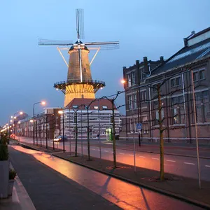

De Groothoofdspoort is een nog bestaande stadspoort van Dordrecht, in de Nederlandse provincie Zuid-Holland. De poort is gelegen op het punt waar de drie rivieren, de Oude Maas, de Merwede en de Noord samenkomen.
Cornelis Pronk noteerde bij een tekening van Paulus van Liender van het Groothoofd: "De Groote Hoofd Poort te Dordt".
Kyck over den Dyck is een molen aan de Noordendijk in de stad Dordrecht, in de Nederlandse provincie Zuid-Holland. Het is de enig bewaarde molen van die stad. De oorspronkelijk molen werd gebouwd in 1612 en was een houten standerdkorenmolen. Deze molen maalde mout, dat als grondstof diende voor de Dordtse bierbrouwers. In 1713 werd de kleine standerdmolen vervangen door de huidige stenen stellingmolen.
